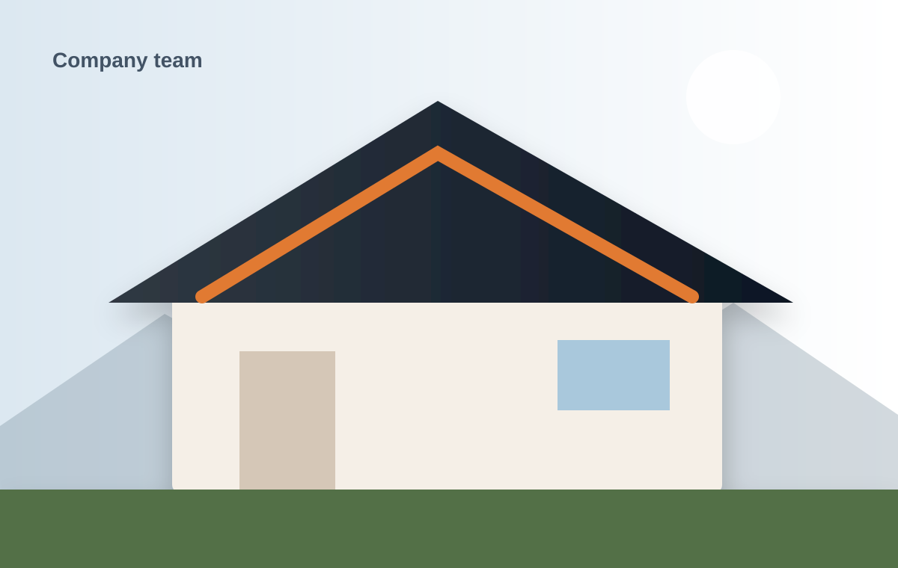

Evan Mercer
Founder & Production DirectorFormer restoration superintendent with 14 years across residential, metal, and low-slope systems.
IronPeak was founded around a simple idea: homeowners should never have to choose between craftsmanship and communication.

After years working production, restoration, and project management, our founders saw the same issues repeat: unclear scopes, disappearing salespeople, rushed crews, and clients left to coordinate details.
IronPeak was designed differently. Estimating, production, cleanup, and closeout follow one documented process. Every customer knows who is accountable and what happens next.
Each leader stays connected to active jobsites, crew development, and quality-control reviews.
Former restoration superintendent with 14 years across residential, metal, and low-slope systems.
Owns scheduling, communication, documentation, and final project closeout.
Leads field audits, crew training, fall-protection standards, and workmanship inspections.
Recommendations begin with visible evidence, measurements, and system-level diagnosis.
Staging, landscaping, access, cleanup, and neighbors are planned—not improvised.
We do not hide behind crews, suppliers, or fine print when a problem needs attention.
Growth only matters when quality, communication, and support grow with it.
We will inspect the system, explain the evidence, and give you options without turning the visit into a pressure pitch.